비밀 장소에 가는 법 (How to Mark)
말리스(Malas) 전역에는 눈에 보이지 않게 교묘히 숨겨진 9개의 비밀 주머니(Hidden Pouch)가 존재합니다.
이 주머니들은 주로 큰 나무 뒤나 구조물 그늘에 숨겨져 있어 일반 화면에서는 볼 수 없으며, 클라이언트 옵션의 '투명화 고리(Circle of Transparency)' 기능을 사용해야 그 모습을 비추어냅니다.
빈 룬(Blank Rune)을 드래그하여 이 숨겨진 주머니 안에 집어넣었다가 다시 꺼내는 동작을 취하면 룬에 신비한 좌표가 마킹됩니다. 이후 마법사의 Recall(리콜)이나 기사도의 Sacred Journey 주문을 사용하면 일반적으로 다다를 수 없는 공중에 뜬 섬이나 Broken Mountains의 격리된 영토로 직접 이동할 수 있습니다.
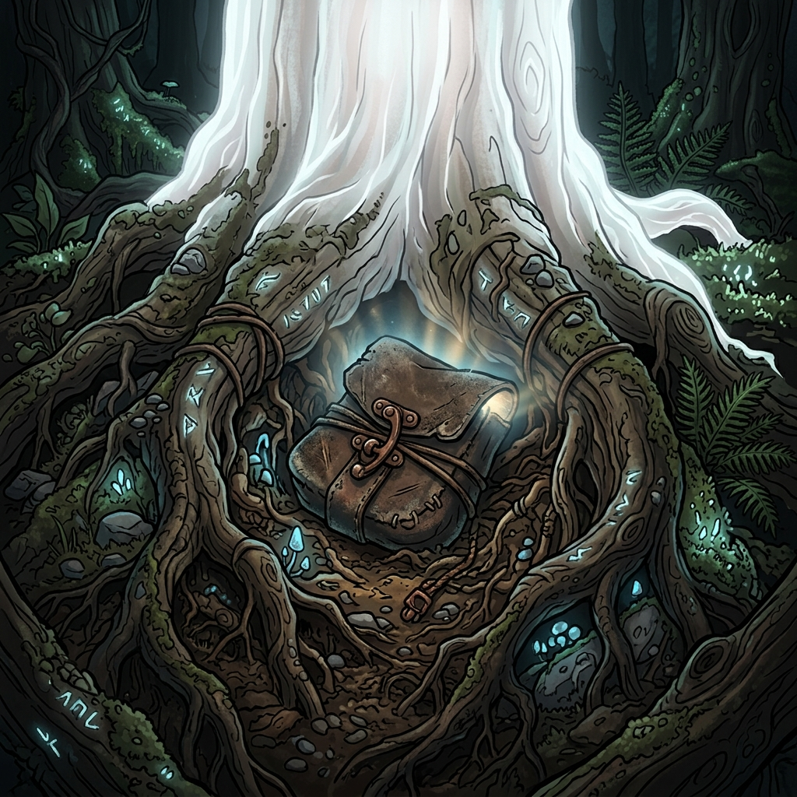
말리스 대륙 비밀 룬 이동 목적지 및 요약 지도 (Rune Destinations & Overview)
룬 이동 목적지 (Destinations Map)
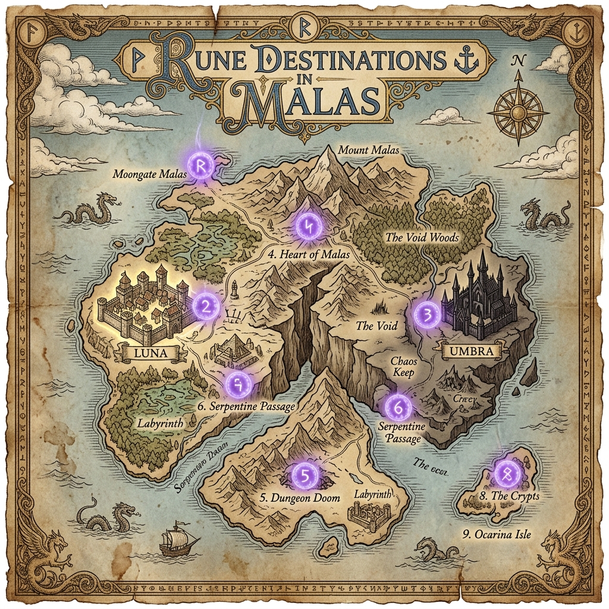
비밀장소 개요도 (9 Secrets Overview Map)
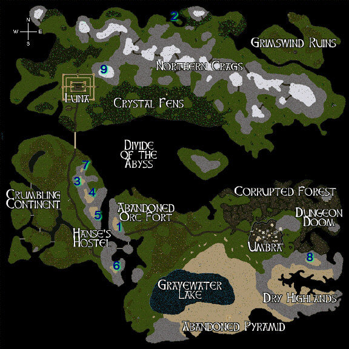
북부 절벽(Northern Crags)의 북쪽 경사면에 있는 나무 바로 뒤편에 교묘히 숨겨져 있는 가죽 주머니입니다.
이곳에 룬을 마킹하면 거대하게 솟아오른 Broken Mountains 산맥 내부의 비밀 지대로 이동하게 됩니다.
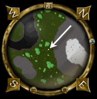
그림스윈드 유적(Grimswind Ruins) 바로 위쪽 지대, 첫 번째 혹은 두 번째 나무 바로 뒤에 비밀 주머니가 파묻혀 있습니다.
이 룬은 북부 절벽(Northern Crags)의 저 멀리 공중에 떠 있는 매우 특별하고 작은 하늘섬으로 당신을 안내합니다.
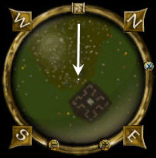
말리스 북부 오크 주둔지(Northern Orc Outpost) 요새의 가장 은밀한 내부 방에 주머니가 있습니다.
지글지글 끓고 있는 불길 위 가마솥 바로 아래 바닥 구석을 집중해서 확인해야 주머니를 열 수 있습니다.
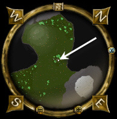
말리스 대륙 중앙을 가르는 대분할의 다리(Bridge of the Divide) 서쪽에 홀로 서 있는 신비로운 흰색 나무(Albino Tree) 근방에 있습니다.
나무 아래 발치에서 몇 걸음 떨어진 풀숲 흙 속에 주머니가 덮여 있습니다.
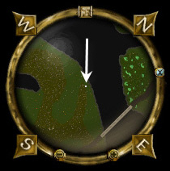
루나와 엄브라 성을 잇는 큰 도로변에 있는 한스의 오두막 여관(Hanse's Hostel) 바 뒤편 구석에 숨겨져 있습니다.
이 주머니는 간혹 잠겨있거나 강력한 폭발 함정이 설치되어 있으니 도적 기술을 준비하는 것이 좋습니다.
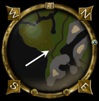
수정 늪지대(Crystal Fens)의 울창한 숲속, 수정 동굴(Crystal Cave) 동쪽 방향 산맥 벽면에 있습니다.
빛을 내뿜는 거대한 크리스탈 결정들 사이, 절벽 바위 틈바구니 속에 비밀 가방이 파묻혀 있습니다.
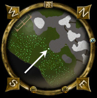
성벽 도시 루나(Luna)를 수호하는 외곽 성벽의 남서쪽 보초탑(SW Battlement) 지하실에 있습니다.
성벽에 올라가려면 루나 북동쪽 마구간 뒤 성벽 계단을 타야 하며, 벽 위를 타고 끝까지 남서쪽으로 전진해야 도달합니다.
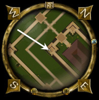
이곳은 주머니가 아닌 말리스 지하 둠(Doom) 던전 내부 마녀 빅토리아(Victoria) 방의 뼈 유골함이 비밀의 트리거입니다.
방의 벽면 양초대 아래 북쪽 벽 구석에 가지런히 놓인 유골 해골에 룬을 조심스럽게 삽입해 마킹을 얻습니다.
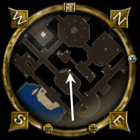
살아있는 숲(Living Forest)의 버려진 거대 오크 요새 북쪽, 요정의 대고목 근처 바닥에 비밀 주머니가 놓여있습니다.
주머니에 룬을 넣으면 마킹은 완료되나, 마법이 거부되어 귀환(Recall)이 작동하지 않습니다. 그러나 진짜 9번째 비밀지는 북부 절벽 수정 동굴 상단에 위치하며 도서관을 통해 이 룬을 구할 수 있습니다.
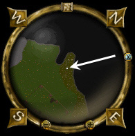